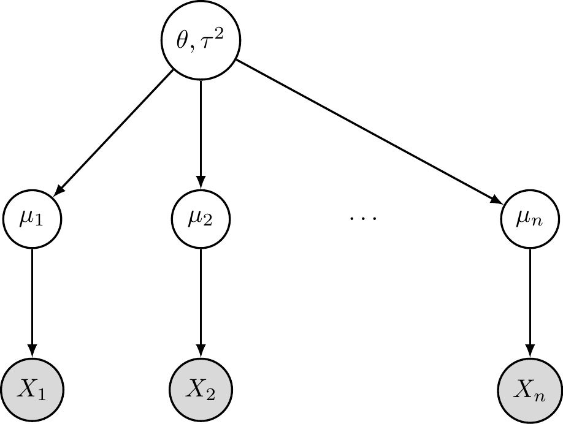
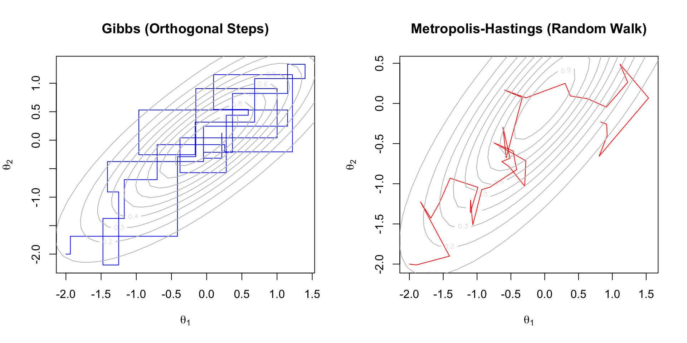
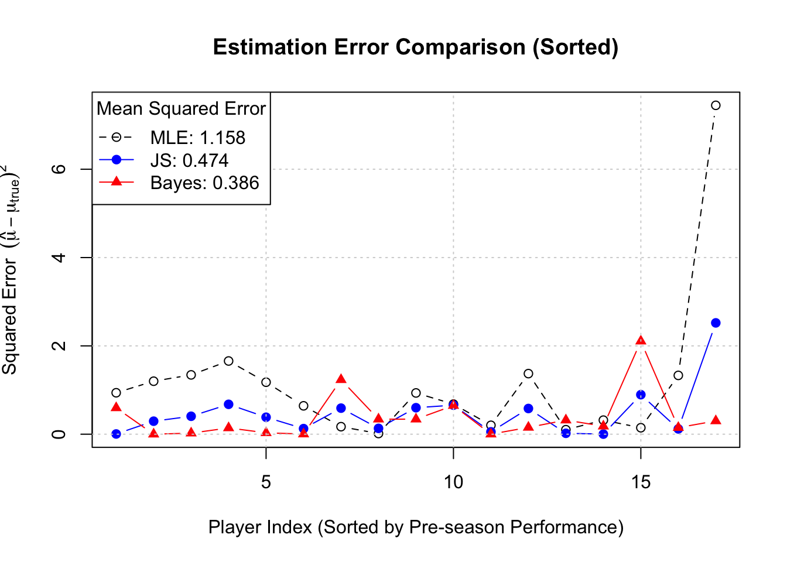
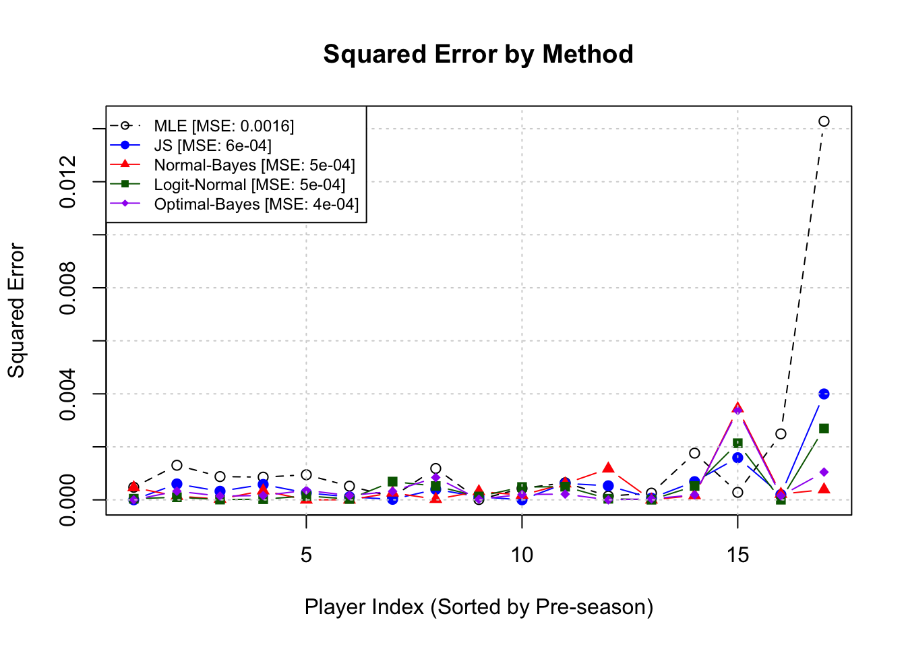
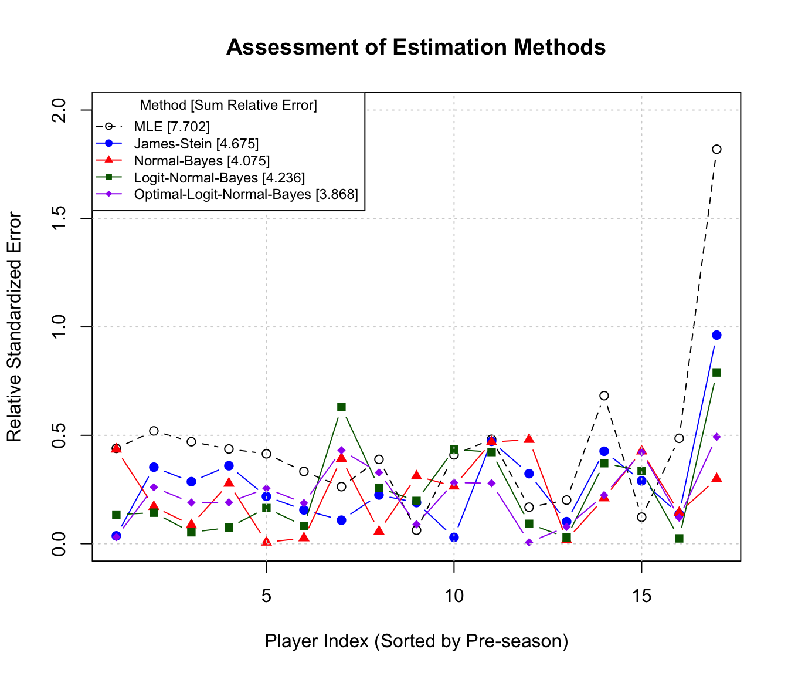

Hierarchical Modeling via MCMC
In complex Bayesian settings where the posterior distribution cannot be derived analytically, we utilize hierarchical structures to represent levels of uncertainty and Markov Chain Monte Carlo (MCMC) to approximate the resulting distributions.
Hierarchical Model Structure
A hierarchical model decomposes a complex joint distribution into a series of conditional levels. The general mathematical form is:
\[ \begin{aligned} \text{Level 1 (Data Likelihood):} & \quad X_i | \mu_i, \sigma^2 \sim f(x_i | \mu_i, \sigma^2) \\ \text{Level 2 (Parameters):} & \quad \mu_i | \theta, \tau^2 \sim \pi(\mu_i | \theta, \tau^2) \\ \text{Level 3 (Hyperparameters):} & \quad \theta, \tau^2 \sim \pi(\theta, \tau^2) \end{aligned} \]
The goal is to compute the joint posterior distribution of all unobserved parameters given the data \(X = \{X_1, \dots, X_n\}\):
\[ p(\boldsymbol{\mu}, \theta, \tau^2 | X) \propto \left[ \prod_{i=1}^n f(x_i | \mu_i, \sigma^2) \pi(\mu_i | \theta, \tau^2) \right] \pi(\theta, \tau^2) \]
Graphical Model Representation (tree Structure)
The following tree diagram illustrates the conditional dependencies. Note that the parameters \(\mu_i\) are conditionally independent given the hyperparameter \(\theta\), which facilitates “borrowing strength” across groups.
MCMC Estimation
In hierarchical models, the joint posterior distribution \(p(\boldsymbol{\mu}, \theta | X)\) often lacks a closed-form analytical solution due to the integration required for the normalizing constant. We use Markov Chain Monte Carlo (MCMC) to draw sequence of samples \(\{\boldsymbol{\mu}^{(t)}, \theta^{(t)}\}\) that converge to the target posterior distribution.
Gibbs Sampling Algorithm
Algorithm 1 Gibbs sampling is an algorithm for sampling from a multivariate distribution by sequentially sampling from the full conditional distributions. To sample from a target distribution \(p(\theta_1, \theta_2, \dots, \theta_k)\), the algorithm iterates through each variable, updating it conditioned on the current values of all other variables:
\[ \begin{aligned} \theta_1^{(t+1)} &\sim p(\theta_1 | \theta_2^{(t)}, \theta_3^{(t)}, \dots, \theta_k^{(t)}) \\ \theta_2^{(t+1)} &\sim p(\theta_2 | \theta_1^{(t+1)}, \theta_3^{(t)}, \dots, \theta_k^{(t)}) \\ &\vdots \\ \theta_k^{(t+1)} &\sim p(\theta_k | \theta_1^{(t+1)}, \theta_2^{(t+1)}, \dots, \theta_{k-1}^{(t+1)}) \end{aligned} \]
Example 1 (Gibbs Sampling for Groups of Normal Data) The Model
To apply the general Gibbs sampling framework \(\theta_1, \theta_2, \dots, \theta_k\) to our specific hierarchical model, we identify the variables as follows:
Data Observations (\(X_i\)): These are the known, measured values at the lowest level of the hierarchy (e.g., test scores of students in school \(i\)). In the Gibbs sampler, these remain fixed and condition the updates of the parameters.
Group-Level Parameters (\(\theta_1 = \mu_i\)): These represent the latent means for each specific group or cluster. In the update step, \(\mu_i\) acts as the first block of variables. It is updated by “compromising” between the local data \(X_i\) and the global characteristic \(\theta\).
Global Hyperparameter (\(\theta_2 = \theta\)): This represents the common mean across all groups. It acts as the second block in the sampler. Its update depends on the current state of all \(\mu_i\) values, effectively “pooling” information from all groups to estimate the overall population center.
Gibbs Update in Hierarchical Models
In the hierarchical tree structure provided earlier, let our parameter vector be \((\mu_i, \theta)\). The “orthogonality” of the updates becomes clear when we derive the full conditionals for a Gaussian case:
Case \(\theta_1 = \mu_i\): Sample \(\mu_i^{(t+1)}\) from \(p(\mu_i | X_i, \theta^{(t)})\). This is a normal distribution with: \[ \mu_i^{(t+1)} \sim N\left( \frac{\tau^2 X_i + \sigma^2 \theta^{(t)}}{\sigma^2 + \tau^2}, \frac{\sigma^2 \tau^2}{\sigma^2 + \tau^2} \right) \]
Case \(\theta_2 = \theta\): Sample \(\theta^{(t+1)}\) from \(p(\theta | \boldsymbol{\mu}^{(t+1)})\). Assuming a flat prior \(\pi(\theta) \propto 1\): \[ \theta^{(t+1)} \sim N\left( \frac{1}{n} \sum_{i=1}^n \mu_i^{(t+1)}, \frac{\tau^2}{n} \right) \]
Visual Characteristic: Gibbs sampling moves along the coordinate axes because it updates one parameter at a time while holding others constant.
Metropolis-hastings (MH) Sampling
When the full conditional distributions are not easy to sample from, we use the Metropolis-Hastings algorithm. At each step \(t\):
- Propose: Draw a candidate state \(\theta^*\) from a proposal distribution \(q(\theta^* | \theta^{(t)})\).
- Accept/Reject: Calculate the acceptance probability: \[ \alpha = \min \left( 1, \frac{p(\theta^* | X) q(\theta^{(t)} | \theta^*)}{p(\theta^{(t)} | X) q(\theta^* | \theta^{(t)})} \right) \]
- Set \(\theta^{(t+1)} = \theta^*\) with probability \(\alpha\); otherwise, set \(\theta^{(t+1)} = \theta^{(t)}\).
Visual Characteristic: MH sampling moves in arbitrary directions and can “stay put” if a proposal is rejected, exploring the space via a random walk.

Case Study: 1998 Major League Baseball Home Run Race
In 1998, the baseball world was captivated by Mark McGwire and Sammy Sosa as they chased Roger Maris’ 1961 record of 61 home runs in a single season. While McGwire and Sosa finished with 70 and 66 home runs respectively, we consider whether such performance could have been predicted using pre-season exhibition data.
For a set of \(i = 1, \dots, 17\) players (including McGwire and Sosa), we observe their batting records in pre-season exhibition matches. Our goal is to estimate each player’s home run “strike rate” for the competitive season.
Transforming Data
We utilize the pre-season home runs (\(y_i\)) and at-bats (\(n_i\)) for 17 players. The data is transformed using a variance-stabilizing transformation to approximate a normal distribution with known variance \(\sigma^2 = 1\).
\[ x_i = \sqrt{n_i} \arcsin\left( 2 \frac{y_i}{n_i} - 1 \right) \]
The goal is to estimate the latent parameter \(\mu_i\) for each player and compare it to the “true” regular season performance.
True Season Parameter (\(\mu_i\) or \(p_i^{season}\))
To validate our estimates, we define the “true” parameter value \(\mu_i\) using the player’s performance over the full competitive season. Let \(Y_i\) be the total home runs and \(N_i\) be the total at-bats in the regular season. The true transformed rate is calculated as:
\[ \mu_i^{\text{season}} = \sqrt{n_i} \arcsin\left( 2 \frac{Y_i}{N_i} - 1 \right) \]
Note that while we use the season-long probability (\(Y_i/N_i\)), we scale it by the pre-season sample size (\(\sqrt{n_i}\)). This ensures that \(\mu_i^{\text{season}}\) is on the same scale as our observations \(x_i\), allowing for direct comparison of the estimation error.
| Player | \(y_i\) | \(n_i\) | \(p_i^{\text{pre}}\) | \(x_i\) | \(Y_i\) | \(N_i\) | \(p_i^{\text{seas}}\) | \(\mu_i\) |
|---|---|---|---|---|---|---|---|---|
| 1 | 7 | 58 | 0.121 | -6.559 | 70 | 509 | 0.138 | -6.176 |
| 2 | 9 | 59 | 0.153 | -5.901 | 66 | 643 | 0.103 | -7.055 |
| 3 | 4 | 74 | 0.054 | -9.476 | 56 | 633 | 0.088 | -8.317 |
| 4 | 7 | 84 | 0.083 | -9.029 | 46 | 645 | 0.071 | -9.441 |
| 5 | 3 | 69 | 0.043 | -9.558 | 45 | 606 | 0.074 | -8.463 |
| 6 | 6 | 63 | 0.095 | -7.488 | 44 | 555 | 0.079 | -7.937 |
| 7 | 2 | 60 | 0.033 | -9.323 | 43 | 619 | 0.069 | -8.035 |
| 8 | 10 | 54 | 0.185 | -5.005 | 40 | 609 | 0.066 | -7.734 |
| 9 | 2 | 53 | 0.038 | -8.589 | 37 | 552 | 0.067 | -7.622 |
| 10 | 2 | 60 | 0.033 | -9.323 | 34 | 540 | 0.063 | -8.238 |
| 11 | 4 | 66 | 0.061 | -8.720 | 32 | 561 | 0.057 | -8.843 |
| 12 | 3 | 66 | 0.045 | -9.270 | 30 | 440 | 0.068 | -8.469 |
| 13 | 2 | 72 | 0.028 | -10.487 | 29 | 585 | 0.050 | -9.518 |
| 14 | 5 | 64 | 0.078 | -8.034 | 28 | 531 | 0.053 | -8.859 |
| 15 | 3 | 42 | 0.071 | -6.673 | 23 | 454 | 0.051 | -7.237 |
| 16 | 2 | 38 | 0.053 | -6.829 | 21 | 504 | 0.042 | -7.149 |
| 17 | 6 | 58 | 0.103 | -6.975 | 15 | 244 | 0.061 | -8.146 |
In this analysis, we model the home run strike rates of 17 Major League Baseball players using pre-season exhibition data from 1998. We apply five statistical methods ranging from simple independent estimation to advanced Bayesian decision theory.
Methods for Estimating \(\mu_i\) (transformed Scale)
Method 1: Simple Estimation (MLE)
The Maximum Likelihood Estimator (MLE) assumes each player’s performance is independent. It relies solely on the observed pre-season data.
\[ \hat{\mu}_i^{MLE} = X_i \]
# Simple Estimate Is Just the Data Itself
mu_mle <- baseball_data$x
# MSE Calculation (transformed Scale)
mse_mle <- mean((mu_mle - baseball_data$true_mu)^2)Method 2: Empirical Bayes (james-stein)
The James-Stein estimator introduces a global mean \(\bar{X}\) and shrinks individual estimates toward it. This assumes the players come from a common population distribution.
\[ \hat{\mu}_i^{JS} = \bar{X} + \left( 1 - \frac{k-3}{\sum (X_i - \bar{X})^2} \right) (X_i - \bar{X}) \]
where \(k=17\) is the number of players.
theta_hat <- mean(baseball_data$x)
S <- sum((baseball_data$x - theta_hat)^2)
shrinkage_factor <- 1 - (14 / S)
mu_js <- theta_hat + shrinkage_factor * (baseball_data$x - theta_hat)
# MSE Calculation (transformed Scale)
mse_js <- mean((mu_js - baseball_data$true_mu)^2)Method 3: Fully Bayesian MCMC (brms)
We use a hierarchical Bayesian model where parameters are treated as random variables. We implement this using brms.
\[ \begin{aligned} X_i &\sim N(\mu_i, 1) \\ \mu_i &\sim N(\theta, \tau^2) \\ \theta &\sim N(0, 10) \\ \tau &\sim \text{Cauchy}(0, 2) \end{aligned} \]
baseball_data$sei <- rep(1, length(baseball_data$x))
# Fit Random Intercept Model: X | Se(1) ~ 1 + (1|player)
fit_brms <- brm(
formula = x | se(sei, sigma = TRUE) ~ 1 + (1 | Player),
data = baseball_data,
prior = c(
prior(normal(0, 10), class = "Intercept"),
prior(cauchy(0, 2), class = "sd")
),
chains = 2, iter = 4000, warmup = 1000, seed = 123,
refresh = 0
)
# Extract Point Estimates (posterior Means)
post_means <- fitted(fit_brms)[, "Estimate"]
mu_brms <- post_means
# MSE Calculation (transformed Scale)
mse_brms <- mean((mu_brms - baseball_data$true_mu)^2)Comparison of Estimates of \(\mu_i\)
Full Comparison of Estimates (Transformed Scale)
The following table presents the transformed data (\(x_i\)) and the true season parameter (\(\mu_i\)) alongside the estimates from the three methods. The rows are sorted by \(x_i\) to visualize how the shrinkage methods (James-Stein and Bayesian) pull the estimates away from the extremes and toward the population mean compared to the raw MLE.
| Player | \(x_i\) (MLE) | \(\hat{\mu}_{JS}\) | \(\hat{\mu}_{Bayes}\) | \(\mu_{true}\) |
|---|---|---|---|---|
| 13 | -10.487 | -9.589 | -8.746 | -9.518 |
| 5 | -9.558 | -9.006 | -8.478 | -8.463 |
| 3 | -9.476 | -8.954 | -8.470 | -8.317 |
| 7 | -9.323 | -8.858 | -8.412 | -8.035 |
| 10 | -9.323 | -8.858 | -8.415 | -8.238 |
| 12 | -9.270 | -8.825 | -8.412 | -8.469 |
| 4 | -9.029 | -8.673 | -8.331 | -9.441 |
| 11 | -8.720 | -8.479 | -8.260 | -8.843 |
| 9 | -8.589 | -8.397 | -8.206 | -7.622 |
| 14 | -8.034 | -8.048 | -8.054 | -8.859 |
| 6 | -7.488 | -7.705 | -7.897 | -7.937 |
| 17 | -6.975 | -7.384 | -7.754 | -8.146 |
| 16 | -6.829 | -7.292 | -7.714 | -7.149 |
| 15 | -6.673 | -7.194 | -7.663 | -7.237 |
| 1 | -6.559 | -7.122 | -7.628 | -6.176 |
| 2 | -5.901 | -6.709 | -7.441 | -7.055 |
| 8 | -5.005 | -6.146 | -7.186 | -7.734 |
Plots of Squared Errors (Sorted by \(x_i\))
This plot displays the Squared Error for each player. The x-axis represents the players sorted from lowest pre-season performance to highest.
# Calculate Squared Errors Using the SORTED Dataframe
err_mle <- (df_sorted$x_i - df_sorted$mu_true)^2
err_js <- (df_sorted$mu_js - df_sorted$mu_true)^2
err_brms <- (df_sorted$mu_bayes - df_sorted$mu_true)^2
# Determine Y-axis Range
y_max <- max(c(err_mle, err_js, err_brms))
# Plot MLE Errors (baseline)
plot(1:17, err_mle, type = "b", pch = 1, col = "black", lty = 2,
xlab = "Player Index (Sorted by Pre-season Performance)",
ylab = expression(Squared~Error~~(hat(mu) - mu[true])^2),
main = "Estimation Error Comparison (Sorted)",
ylim = c(0, y_max))
# Add James-stein Errors
lines(1:17, err_js, type = "b", pch = 19, col = "blue")
# Add Bayesian (brms) Errors
lines(1:17, err_brms, type = "b", pch = 17, col = "red")
# Add Grid and Legend
grid()
legend("topleft",
title = "Mean Squared Error",
legend = c(paste0("MLE: ", round(mse_mle, 3)),
paste0("JS: ", round(mse_js, 3)),
paste0("Bayes: ", round(mse_brms, 3))),
col = c("black", "blue", "red"),
pch = c(1, 19, 17),
lty = c(2, 1, 1))

Methods for Estimating \(p_i\) Directly
Method 1-3: Converting \(\hat \mu_i\) Back to \(p_i\)
The first three methods (MLE, James-Stein, and Normal-Normal Bayes) estimated the parameter \(\mu_i\) on the transformed scale. To obtain the probability estimates \(\hat{p}_i\), we apply the inverse of the variance-stabilizing transformation:
\[ \hat{p}_i = \frac{1}{2} \left( \sin\left( \frac{\hat{\mu}_i}{\sqrt{n_i}} \right) + 1 \right) \]
where \(\hat{\mu}_i\) corresponds to the estimate derived from Method 1, 2, or 3, and \(n_i\) is the number of pre-season at-bats for player \(i\).
Method 4: Hierarchical Logistic Regression (logit-normal)
In this fourth method, we model the probability \(p_i\) directly using a hierarchical structure on the log-odds scale, rather than transforming the data.
We assume the count \(y_i\) follows a Binomial distribution. The log-odds (logit) of the success rate \(p_i\) are drawn from a common Normal distribution with unknown mean \(\mu_0\) and standard deviation \(\tau_0\).
\[ \begin{aligned} y_i | p_i &\sim \text{Binomial}(n_i, p_i) \\ \text{logit}(p_i) &\sim N(\mu_0, \tau_0^2) \\ \mu_0 &\sim N(0, 10) \\ \tau_0 &\sim \text{Cauchy}(0, 2) \end{aligned} \]
We implement this in brms using the binomial family with a logit link. The individual point estimate \(\hat{p}_i\) is the posterior mean of \(p_i\). Note that because the inverse-logit function is non-linear, the posterior mean of \(p_i\) is not simply the inverse-logit of the posterior mean of the random effect; brms handles this integration automatically via the fitted() function.
# 1. Fit Hierarchical Logistic Regression
# We use the 'file' argument to cache the model on disk
fit_logit <- brm(
formula = Pre_HR | trials(Pre_AtBats) ~ 1 + (1 | Player),
data = baseball_data,
family = binomial(link = "logit"),
prior = c(
prior(normal(0, 5), class = "Intercept"),
prior(cauchy(0, 2), class = "sd")
),
chains = 2, iter = 4000, warmup = 1000, seed = 123,
refresh = 0,
file = "fit_logit_baseball"
)
# 2. Extract specific players for the plots
ordered_players <- baseball_data %>% arrange(p_pre)
target_players <- ordered_players[c(1, 2, 16, 17), ]
# 3. Extract Posterior Draws
# summary = FALSE gives the full MCMC matrix (iter x players)
post_draws <- fitted(fit_logit,
newdata = target_players,
summary = FALSE)library(ggplot2)
library(dplyr)
library(tidyr)
# 1. Prepare data for plotting
plot_list <- list()
for(i in 1:nrow(target_players)) {
p_id <- target_players$Player[i]
n_i <- target_players$Pre_AtBats[i]
plot_list[[i]] <- data.frame(
Player = paste("Player", p_id),
p_sample = post_draws[, i] / n_i,
p_pre = target_players$p_pre[i],
p_season = target_players$p_season[i]
)
}
plot_data <- do.call(rbind, plot_list)
# 2. Draw the faceted density plots
ggplot(plot_data, aes(x = p_sample)) +
geom_density(fill = "steelblue", alpha = 0.4, color = "steelblue") +
geom_vline(aes(xintercept = p_pre),
color = "grey50", linetype = "dashed", linewidth = 1) +
geom_vline(aes(xintercept = p_season),
color = "black", linetype = "solid", linewidth = 1) +
facet_wrap(~Player, scales = "free", ncol = 2) +
theme_minimal() +
labs(
title = "Posterior Distributions of HR Probabilities for Extreme Players",
subtitle = "Dashed Grey: Pre-season (Observed) | Solid Black: Remainder of Season (Actual)",
x = expression(p[i]),
y = "Posterior Density"
) +
theme(
strip.text = element_text(face = "bold"),
panel.spacing = unit(1, "lines")
)
Method 5: Optimal Bayes Estimator w.r.t. Relative Absolute Error
While the posterior mean (Method 4) minimizes the Mean Squared Error (MSE), it is not necessarily optimal for the Relative Standardized Error metric we defined earlier: \[L(p, \hat{p}) = \frac{|p - \hat{p}|}{\min(p, 1-p)}\]
This is a form of weighted absolute error loss, where the weight is \(w(p) = \frac{1}{\min(p, 1-p)}\). Theoretical derivation shows that the estimator minimizing the expected posterior loss for this function is the Weighted Posterior Median.
We compute this by extracting the full posterior samples from the Logit-Normal model (Method 4) and calculating the weighted median for each player.
# 1. Extract Posterior Samples (n_samples X 17 Players)
# Posterior_epred Gives Samples of the Expected Count (N * P)
post_counts <- posterior_epred(fit_logit)
# Convert to Probability Scale by Dividing by Trials
p_samples <- sweep(post_counts, 2, baseball_data$Pre_AtBats, "/")
# 2. Extract Posterior Means (Method 4)
# This provides the missing p_hat_logit variable
p_hat_logit <- colMeans(p_samples)
# 3. Define Function for Weighted Median
# Finds the Value 'q' Such That Sum(weights Where X <= Q) >= 0.5 * Total_weight
get_weighted_median <- function(samples) {
# Calculate weights based on the loss function denominator
# Avoid division by exact zero (unlikely but safer)
denom <- pmin(samples, 1 - samples)
denom[denom < 1e-6] <- 1e-6
weights <- 1 / denom
# Normalize weights
weights_norm <- weights / sum(weights)
# Sort samples and weights
ord <- order(samples)
samp_sorted <- samples[ord]
w_sorted <- weights_norm[ord]
# Find cutoff
cum_w <- cumsum(w_sorted)
idx <- which(cum_w >= 0.5)[1]
return(samp_sorted[idx])
}
# 4. Apply to All Players (Method 5)
p_hat_optimal <- apply(p_samples, 2, get_weighted_median)Comparison of All Five Estimates of \(p_i\)
We now compare all five methods: MLE, James-Stein (transformed), Bayes Normal-Normal (transformed), Hierarchical Logit-Normal (Posterior Mean), and Optimal Bayes (Weighted Median).
| Player | Season Avg (\(p_i\)) | MLE | James-Stein | Normal-Bayes | Logit-Normal | Optimal-Bayes |
|---|---|---|---|---|---|---|
| 13 | 0.050 | 0.028 | 0.048 | 0.071 | 0.056 | 0.048 |
| 7 | 0.069 | 0.033 | 0.045 | 0.058 | 0.060 | 0.051 |
| 10 | 0.063 | 0.033 | 0.045 | 0.058 | 0.060 | 0.051 |
| 9 | 0.067 | 0.038 | 0.043 | 0.048 | 0.062 | 0.054 |
| 5 | 0.074 | 0.043 | 0.058 | 0.074 | 0.062 | 0.055 |
| 12 | 0.068 | 0.045 | 0.058 | 0.070 | 0.063 | 0.055 |
| 16 | 0.042 | 0.053 | 0.037 | 0.025 | 0.068 | 0.060 |
| 3 | 0.088 | 0.054 | 0.069 | 0.083 | 0.066 | 0.059 |
| 11 | 0.057 | 0.061 | 0.068 | 0.075 | 0.068 | 0.062 |
| 15 | 0.051 | 0.071 | 0.052 | 0.037 | 0.073 | 0.065 |
| 14 | 0.053 | 0.078 | 0.078 | 0.077 | 0.075 | 0.067 |
| 4 | 0.071 | 0.083 | 0.094 | 0.106 | 0.078 | 0.071 |
| 6 | 0.079 | 0.095 | 0.087 | 0.081 | 0.082 | 0.073 |
| 17 | 0.061 | 0.103 | 0.088 | 0.074 | 0.084 | 0.075 |
| 1 | 0.138 | 0.121 | 0.098 | 0.079 | 0.091 | 0.079 |
| 2 | 0.103 | 0.153 | 0.117 | 0.088 | 0.105 | 0.090 |
| 8 | 0.066 | 0.185 | 0.129 | 0.085 | 0.118 | 0.098 |
1. MSE Comparison
# 3. Calculate MSE
mse_p_mle <- mean((df_compare_sorted$p_mle - df_compare_sorted$p_true)^2)
mse_p_js <- mean((df_compare_sorted$p_js - df_compare_sorted$p_true)^2)
mse_p_norm <- mean((df_compare_sorted$p_norm - df_compare_sorted$p_true)^2)
mse_p_logit <- mean((df_compare_sorted$p_logit - df_compare_sorted$p_true)^2)
mse_p_opt <- mean((df_compare_sorted$p_opt - df_compare_sorted$p_true)^2)
# 4. Plot MSE
y_max <- max((df_compare_sorted$p_mle - df_compare_sorted$p_true)^2)
plot(1:17, (df_compare_sorted$p_mle - df_compare_sorted$p_true)^2,
type = "b", pch = 1, col = "black", lty = 2,
xlab = "Player Index (Sorted by Pre-season)",
ylab = "Squared Error",
main = "Squared Error by Method",
ylim = c(0, y_max))
lines(1:17, (df_compare_sorted$p_js - df_compare_sorted$p_true)^2, type = "b", pch = 19, col = "blue")
lines(1:17, (df_compare_sorted$p_norm - df_compare_sorted$p_true)^2, type = "b", pch = 17, col = "red")
lines(1:17, (df_compare_sorted$p_logit - df_compare_sorted$p_true)^2, type = "b", pch = 15, col = "darkgreen")
lines(1:17, (df_compare_sorted$p_opt - df_compare_sorted$p_true)^2, type = "b", pch = 18, col = "purple")
grid()
legend("topleft",
legend = c(paste0("MLE [MSE: ", round(mse_p_mle, 4), "]"),
paste0("JS [MSE: ", round(mse_p_js, 4), "]"),
paste0("Normal-Bayes [MSE: ", round(mse_p_norm, 4), "]"),
paste0("Logit-Normal [MSE: ", round(mse_p_logit, 4), "]"),
paste0("Optimal-Bayes [MSE: ", round(mse_p_opt, 4), "]")),
col = c("black", "blue", "red", "darkgreen", "purple"),
pch = c(1, 19, 17, 15, 18),
lty = c(2, 1, 1, 1, 1),
cex = 0.75,
bg = "white")
2. Comparison of Relative Absolute Error
We also evaluate the methods using the relative error metric that penalizes deviations based on the rarity of the event: \[ \text{Metric}_i = \frac{|p_i^{\text{true}} - \hat{p}_i|}{\min(p_i^{\text{true}}, 1 - p_i^{\text{true}})} \]

Bayesian Predictive Distributions
A key feature of Bayesian analysis is the ability to make inference about future observations, rather than just the model parameters. The posterior predictive distribution describes the probability of observing a new data point \(y^*\) given the observed data \(y\).
Definition 1 (Posterior Predictive Distribution) Let \(f(y^*|\theta)\) be the sampling distribution of a future observation \(y^*\) given parameter \(\theta\), and let \(\pi(\theta|y)\) be the posterior distribution of \(\theta\) given observed data \(y\). The posterior predictive density is obtained by marginalizing over the parameter \(\theta\):
\[ f(y^*|y) = \int_\Theta f(y^*|\theta) \pi(\theta|y) \, d\theta \]
This distribution incorporates two distinct sources of uncertainty:
- Sampling Uncertainty (Aleatoric): The inherent variability of the data generation process, represented by the variance in \(f(y^*|\theta)\).
- Parameter Uncertainty (Epistemic): The uncertainty regarding the true value of \(\theta\), represented by the variance in the posterior \(\pi(\theta|y)\).
As sample size \(n \to \infty\), the parameter uncertainty vanishes (the posterior approaches a point mass), and the predictive distribution converges to the true data-generating distribution.
Example 2 (Normal-normal Predictive Distribution) Consider a case where the data \(y_1, \dots, y_n\) are independent and normally distributed with unknown mean \(\mu\) and known variance \(\sigma^2\):
\[ Y_i | \mu \sim N(\mu, \sigma^2) \]
Assume a conjugate prior for the mean: \(\mu \sim N(\mu_0, \sigma_0^2)\). The posterior distribution is \(\mu|y \sim N(\mu_n, \sigma_n^2)\), where \(\mu_n\) and \(\sigma_n^2\) are the updated posterior hyperparameters.
The predictive distribution for a new observation \(y^*\) is derived as:
\[ \begin{aligned} f(y^*|y) &= \int_{-\infty}^{\infty} f(y^*|\mu) \pi(\mu|y) \, d\mu \\ &= \int_{-\infty}^{\infty} \frac{1}{\sqrt{2\pi\sigma^2}} e^{-\frac{(y^*-\mu)^2}{2\sigma^2}} \times \frac{1}{\sqrt{2\pi\sigma_n^2}} e^{-\frac{(\mu-\mu_n)^2}{2\sigma_n^2}} \, d\mu \end{aligned} \]
This convolution of two Gaussians results in a new Gaussian distribution:
\[ y^* | y \sim N(\mu_n, \sigma^2 + \sigma_n^2) \]
Here, the total predictive variance is the sum of the data variance (\(\sigma^2\)) and the posterior uncertainty about the mean (\(\sigma_n^2\)).